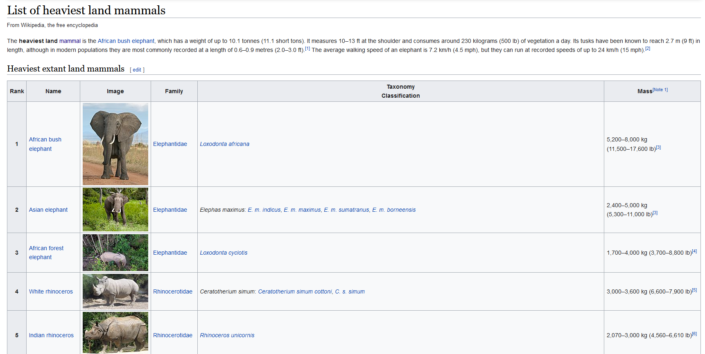

word="banana"
count=0
for letter in word:
if letter == "a":
count=count+1
print(count) 3You will very likely find the solution to these exercises online. We, however, strongly encourage you to work on these exercises without doing so. Understanding someone else’s solution is very different from coming up with your own. Use the lecture notes and try to solve the exercises independently.
Traditionally, the first program you write in a new language is called “Hello World!”. Use the print() statement to display “Hello World!” on the screen.
help(print)input() and f-strings.Write a program that accepts a string from the user and …
… only shows the first three letters,
… only shows the last three letters,
… takes the 2nd letter and repeats it 4 times,
… shows the length of the string,
… shows whether the string contains another user-provided substring, for example "a",
… shows the very first occurence of the substring "a",
… shows the very first occurence of the substring "a" excluding the first and the last letter.
Define two strings ‘string1’ and ‘string2’ and describe what happens…,
… if you compare them with ==, > and <,
… if you test them with in and not,
Write a program that takes a string as a user input and only returns…
…. the letters that are present at an even index, e.g., the input “test run” would result in displaying “t”, “s”, and “u”, (Hint: range())
… the letters that are vowels.
Accept two integer values from the user and return their product. If the product is greater than 1000, then return their sum.
isnumeric().Consider the screenhot in Figure 1 taken from wikipedia.org.

Which Python data types could you use in principle to collect …
… the names of the five heaviest mammals? Implement it in every possible data type. Write a program that outputs the first, the second and the fifth of the heaviest mammals.
… the names and the (maximum) mass of the mammals? Again, implement it in every possible data type and write a program that outputs the name and the maximum mass of the first, the second and the fifth heaviest mammal
Based on Part a), consider the following problems. Discuss/show whether and how you could solve them with the different data type implementations.
Consider the names of the heaviest mammals only. A researcher wants to sort the names of the heaviest animals according to their alphabetical order. Create a new list called mammals_names_sorted. What happens do the original list of names, if you use Python’s .sort() method for lists?
A new study reports the observation of a new species called “Giant Australian hamster” with a mass of 5000 kg. Insert this observation in your list. Hint: Use Python’s .insert() method for lists.
Now, consider the list of the mammals’ name and mass. A new study reports that an African bush elephant with a mass of 10000 kg has been observed. Update the list of heaviest mammals in the solutions from Part a) (if possible).
Given a list of integers (which you define in your code), output “True” if the first and last number of the list are the same (else output “False”).
Given a list of numbers (which you define in your code), print only those numbers that can be divided by 5 without residual.
Write a program that combines two lists by alternatingly taking elements, e.g. ["a","b","c"], [1,2,3] → ["a",1,"b",2,"c",3]
Let a small data set be \[5\ 2\ 11\ 19\ 6.\]
x_list.x_square.compare that returns the value
The following program counts the number of times the letter “a” appears in a string
word="banana"
count=0
for letter in word:
if letter == "a":
count=count+1
print(count) 3Encapsulate the code above in a function named count(w,l,s) that counts the number of times a letter l appears in a word w. Additionally, s gives the index in w where it should start the search.
Generate a random integer between 1 and 10. Write a guessing game where the user has to guess the secret number. After every guess, the program tells the user whether their number was too large or too small. At the end the number of tries needed should be printed.
randint() provided in the random module to randomly draw integers. Also use input().